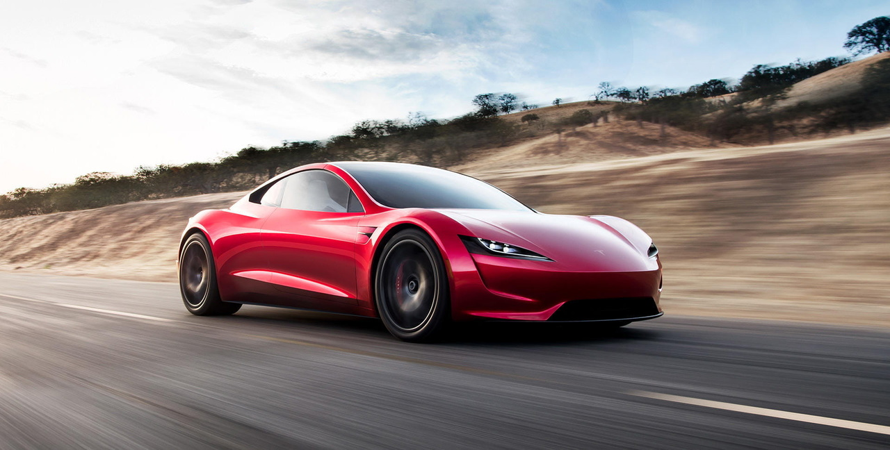

Origen y Evolución
La historia de los autos deportivos es un fascinante recorrido por la evolución de la ingeniería, el diseño y la pasión por la velocidad. Aunque la definición exacta de un "auto deportivo" ha evolucionado con el tiempo, en general se refiere a un automóvil diseñado para ofrecer un rendimiento superior en términos de velocidad, manejo y aceleración, a menudo sacrificando el confort y la practicidad de los autos de uso diario.
Los inicios (finales del siglo XIX y principios del XX)
Los primeros automóviles eran, en esencia, carruajes sin caballos. Sin embargo, a medida que la tecnología de los motores de combustión interna avanzó, surgió un interés por la velocidad y la competición. Se disputaron las primeras carreras y se comenzaron a fabricar vehículos con mayor potencia y menor peso.
Aunque existen varios contendientes, el Hispano-Suiza Alfonso XIII (1911) y el Vauxhall Prince Henry Sports Torpedo (1914) son a menudo citados como los primeros autos deportivos "verdaderos". Estos vehículos se destacaron por su potencia y rendimiento superior a la media de la época.

- Bugatti Type 35: Un ícono de la competición, este auto dominó las carreras en la década de 1920.
- Alfa Romeo 8C: Conocido por su belleza y sus victorias en las carreras de resistencia.
- Mercedes-Benz SSK: Un potente y lujoso deportivo de alto rendimiento.
- Porsche 356 (1948): El primer automóvil con el nombre Porsche, sentó las bases de la marca.
- Jaguar XK120 (1948): Se convirtió en el coche de producción más rápido del mundo en su momento.
- Ferrari 250 GTO (1962): Considerado por muchos como uno de los mejores autos de todos los tiempos, tanto por su belleza como por su rendimiento.
- Lamborghini Miura (1966): Se le atribuye ser el primer "superdeportivo" del mundo, con su revolucionario motor V12 montado en posición central.
- Ford Mustang (1964): Aunque no es un deportivo puro, su diseño y potente motor lo convirtieron en un ícono.
- Chevrolet Corvette (década de 1960): El deportivo estadounidense por excelencia.
- Porsche 959 (1986): Introdujo la tracción a las cuatro ruedas en los deportivos de alto rendimiento.
- McLaren F1 (1992): Conocido por ser el auto de producción más rápido del mundo durante muchos años, con un diseño innovador de tres asientos.
- Bugatti Veyron (2005): El primer "hiperdeportivo" en superar los 400 km/h.
La era de entreguerras (décadas de 1920 y 1930)
Esta época vio el auge de marcas que se convertirían en leyendas. Los autos deportivos se volvieron más elegantes y aerodinámicos. Se perfeccionaron los motores, se introdujo la sobrealimentación y se exploraron nuevos diseños de carrocería.
La posguerra y el auge de las marcas legendarias (décadas de 1940 a 1960)
Después de la Segunda Guerra Mundial, la industria automotriz se recuperó y la demanda de autos deportivos creció. Fue una época de innovación y de nacimiento de algunos de los modelos más icónicos de la historia.
La era de los "muscle cars" y la crisis del petróleo (décadas de 1960 y 1970)
En Estados Unidos, la década de 1960 fue la edad de oro de los "muscle cars", vehículos con grandes motores V8 en carrocerías de producción masiva.
La crisis del petróleo de la década de 1970 afectó la producción de autos con motores grandes y de alto consumo. Sin embargo, las marcas europeas y japonesas continuaron innovando, enfocándose en la eficiencia y el diseño.
La era moderna y el avance tecnológico (década de 1980 en adelante)
A partir de la década de 1980, la tecnología comenzó a jugar un papel fundamental en el diseño de los autos deportivos. La electrónica, la aerodinámica activa y los nuevos materiales (como la fibra de carbono) transformaron por completo el rendimiento de los vehículos.
La era de los híbridos y eléctricos: En el siglo XXI, marcas como Porsche, Ferrari y Tesla han liderado el camino con modelos híbridos y eléctricos que combinan el rendimiento con la sostenibilidad, redefiniendo el futuro de los autos deportivos.
